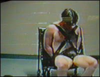
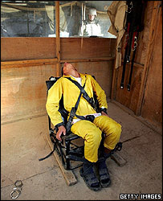

An additional note: Literally minutes after I posted this essay, the embedded videos of Hope Steffey's molestation were removed from YouTube due to a copyright claim by the television station that originally aired them. The video is still available here.

This sort of thing isn't supposed to happen -- at least not to attractive, middle-class, middle-aged American women.
We've become at least somewhat inured to the spectacle of sadistic violence being inflicted on dusky-skinned foreign terrorist suspects, or the occasional (make that “increasingly frequent”) violent death of black Americans, both young males and elderly women, as a result of paramilitary police raids.
Some of us have read the complaints of accused criminals who have been “lit up” by corrections officers in jails or brutalized in prison. And it's not difficult to find accounts of similar treatment inflicted on illegal aliens held in ICE detention facilities (the most notorious of which was built with the help of illegal immigrant labor, of course).

But, hey – the perps had it coming, right? And why should we be upset if some border-jumper gets roughed up a bit? After all, isn't that how things are done al otro lado de la frontera?
Hearts unmoved by such cases tend to melt at the spectacle of a slender, helpless woman shrieking in fear and impotent rage as she is pinned down and violently disrobed by skinheads wearing the uniform of Ohio's Stark County Sheriff's Department.
Don't get me wrong: The outrage over the sexual violation of Ohio resident Hope Steffey, who was arrested, assaulted by police, strip-searched, and left naked in a cell for six hours, is eminently justified.
In fact, I earnestly hope that there will be much more outrage, that it goes thermonuclear, and that its radiating consequences include not only criminal charges against the simians in uniform who violated Hope, but also a dramatic increase in public curiosity about the routine sadism, perversion, and abuse that typify America's prison-industrial complex.
It must be understood that what happened to Hope – who was arrested after suffering an assault and calling the police for help – is uncommon only in that the abuse she suffered was inflicted on an uncommonly telegenic and sympathetic victim. Fury over her experience in jail is coupled with outrage that this woman could begin the night as the victim of a private assault and end it as a victim of sexual molestation and battery under color of authority. And she was taken to jail on the flimsiest of pretexts, being arrested for resisting arrest – a tautological police tactic that is becoming increasingly common.
But what we have to remember is that Hope's evening from hell is not that unusual. In fact, her case isn't even unique for Ohio's Stark County jail system.
Last August, three teenage girls from Canton, Ohio filed suit against the Multi-County Juvenile Attention Center after a “scared straight” experience turned into a festival of sexual assault and humiliation.
In April of last year, the girls were charged with “criminal trespass on a public sidewalk” -- a charge as contrived as an arrest for resisting arrest – as a result of a fight that involved several other teenagers. The girls insist that they were innocent bystanders, a predictable claim that has the merit of being legally true: Rather than going to court, the girls agreed to perform 20 hours of “community service,” attend school dutifully, and take a 15-minute “walk-through” of the juvenile “Attention Center.”
According to the lawsuit, within minutes of their arrival at the juvenile jail, a “youth leader” -- that is, a guard – began to scream at them. When the girls reacted by giggling, a predictable adolescent reaction to tension, the tax-engorged cretin assaulted them, throwing them against the wall face-first while continuing to scream at them.
Led to the second floor of the facility, the girls were subjected to crude and denigrating sexual remarks. One guard – who should be fitted for a millstone (these are 13-year-old girls we're talking about) or at least beaten into jelly by the male relatives of his victims – made remarks about the girls' breasts. Another insinuated that one of the girls was a lesbian and displayed his unique charm by cracking a funny about that reliable comic staple, prison rape: “[The] other female inmates will love you because they love blondes.”
Female guards then took the girls individually into a room where each of them was forced to strip and undergo a body cavity examination – while the male guards prowled just outside the doorway making derisive remarks. The girls were then forced to put on filthy jail attire – including unlaundered intimate wear. About a half-hour later they were given 30 seconds to change their clothes under the threat of staying in the jail overnight.
The girls then fled. The guards went back to “work” until their shifts ended and they could go back to surfing the 'Net for child porn, or whatever it is that skeevy, mouth-breathing degenerates of this sort do when they're not on the clock.
When the parents complained to the court about the sexual violation and physical battery endured by their daughters, Court Administrator Richard DeHeer parried the complaint by replying...
... let's all say it together ...
... that the juvenile jail staff “acted within its protocol.”
This was essentially the same reaction Stark County Sheriff Tim Swanson offered when the strip-search and sexual violation of Hope Steffey hit the local news.
First of all, insisted Swanson, his deputies acted in accordance with established policies – despite the fact that the Department's guidelines do not permit male deputies to be present when a female is being subjected to a strip search. Well, ah, y'see, what was done to Steffey wasn't a strip search, Swanson continued.
This leaves to the imagination of those unusually gifted in the art of conjuring euphemisms to devise a more suitable way of describing a procedure that involved tearing the clothes and undergarments from a terrified, resisting woman, leaving her, you know, naked and forcing her to swaddle herself in toilet paper to provide some scintilla of modesty, since she was still very much within eyeshot of the tonsured steroid junkies who had held her down and torn off her clothes.
Hope and her husband have likewise filed suit. And, like the lawsuit filed on behalf of the three teenage girls from Canton, Hope's complaint will never go to court. Some anodyne “reforms” will be promised, or a useless “administrative inquiry” will be undertaken; nobody who draws a tax-funded paycheck will be punished in any way; a tax-subsidized settlement will be reached, and business as usual will continue behind bars in Stark County.
And this means that, as surely as water will wet us, and as surely as fire will burn, other innocent people in Stark County will be abducted under color of authority, on the basis of entirely contrived charges, and suffer treatment similar to that received by Hope Steffey.
The real source of outrage here is that things could have been so much worse for Hope. Yes, she could have been forced to “ride the Taser,” had the arresting officer been interested in giving her a brief taste of electrocution torture. But in many jurisdictions, an arrestee who struggled as Hope did to preserve her personal dignity may have been confined in a bizarre retro-medievalist apparatus called a “restraint chair.”
Restraint chairs come in various styles, colors, and brand names, but the design and function are consistent: The device binds an inmate in such a way that he or she cannot move the arms, legs, or torso.
Purportedly created for the sole purpose of restraining violent and dangerous inmates to prevent them from injuring themselves or others, restraint chairs have been used for punishment, despite explicit warnings from manufacturers. The result has been a growing number of incidents in which prisoners – including non-violent offenders and arrestees yet to be convicted of any offense – have been abused, maimed, crippled, tortured, and killed.
Writing in the April 2000 issue of The Progressive* (obviously a left-leaning journal, but one of the few publications that takes the Bill of Rights seriously), Ann-Marie Cusac recites a list of restraint chair abuses that have been documented in lawsuits and official investigations:
*the devices have been used “for punishment of nonviolent behavior”; for instance, protesters arrested on disorderly conduct charges have been confined in the chair for passive resistance to orders from guards, or for demanding to speak to lawyers;
*children have been “strapped into the chairs for nonviolent behaviors”: Dan Corcoran, president of a Beaverton, Oregon firm that manufactures the chairs, reported under oath that his biggest clients included juvenile detention systems in Georgia and Florida;
*“nude inmates and detainees have been strapped into restraint chairs”;
*some prisoners have been confined to the chairs for as long as eight days;
*other prisoners have been “hooded, pepper-gassed, beaten, or threatened with electrocution” while shackled to the chairs – treatment we'd now associate with the “enhanced interrogation techniques” (that is, torture) used against foreign terrorist suspects.
*as of 2000, at least eleven people died while confined in restraint chairs, often from positional asphyxia, blood clots, or cardiac arrest. Several of those episodes involved inmates or arrestees with documented and treatable mental illness.


No, this isn't a scene from a movie: A prisoner in a Maine"Supermax" facility is bound naked to a restraint chair.
A little more than a decade ago, tax-feeding thugs in the employ of Arizona's Maricopa County Sheriff's Office confined Richard Post, a wheelchair-bound paraplegic, to a restraint chair. Post, who became a competitive wheelchair athlete after the 1985 car accident that crippled his legs, had been arrested for possessing a gram of marijuana.
While in the holding cell, Post tried to explain that he needed an internal catheter in order to urinate; this is an important medical necessity for a paraplegic, and one that could have been accommodated with little difficulty. But Post was in the custody of a department headed by Joe Arpaio, a waddling sack of corrupt ego who uses the calculated abuse of detainees to cultivate an image as “America's toughest sheriff.” The chair-moisteners employed by Arpaio weren't interested in helping Post, so the desperate man started to rattle his cage and flush the toilet in protest.
That was not dangerous behavior, however annoying it might have been. Yet several of Arpaio's heroes seized the helpless paraplegic and confined him in a restraint chair, cinching down the straps with such force that they broke his neck. Already deprived of his legs, Post lost the use of his hands. He sued the County – one of many to do so as a result of criminal abuse or the death of a loved one at the hands of Arpaio's trained simians -- and received an $800,000 settlement.
In 1999, the Sacramento Sheriff's Department paid out $755,000 to dismiss a class-action suit over the use of restraint chairs as punishment. Among the plaintiffs in the suit was Katherine Martin, a 106-pound woman with a heart condition who was confined to a chair for eight and a half hours after allegedly touching a guard. The restraints were pulled so tight that skin was permanently abraded from Katherine's back and shoulders, and she suffered lasting nerve damage. As is often the case when detainees are confined in the chair for long periods, Katherine was denied access to a bathroom and spent hours sitting in her own waste.
The charge against Katherine that led to this treatment was “suspicion of public drunkenness.”
Ronald Motz, another plaintiff in the Sacramento lawsuit, was also arrested for public drunkenness. A videotaped record shows Motz pleading for a chance to call his attorney, only to be told by a guard that “the phone doesn't work.” After a gap in the tape, Motz is shown being strapped down in a chair with a spit mask around his face.
“I just want to call my attorney,” he protests.
“You don't get to call an attorney,” snaps a guard, who informs him that he was “going to be released in about five hours. Now you're not.”
“What did I do wrong – ask for my attorney?” Motz asks plaintively.
“You weren't following directions,” the guard replies.
The Sacramento video record also shows the March 1999 detention of a woman named Gena Domogio, who was strapped in a chair after being thrown to the floor by several guards who knelt on her back and wrapped her face in a towel. As she is bound into the chair she can be heard protesting that she had a thyroid problem and couldn't breathe. Kimberly Bird, another Sacramento detainee, was taken to the hospital after being rendered unconscious in the chair. The video record shows her pleading, “I'm going to die. Don't let me die.”
As a result of lawsuits in Phoenix, Sacramento, Utah, and elsewhere, the use of restraint chairs has tapered off somewhat in recent years, at least domestically. Oh, they're still in use, of course: The Sacramento Sheriff's Department, for instance, faces another potential lawsuit over using the chair as a punish-and-torture mechanism. But the lawsuits of a decade ago apparently caused at least some agencies to lose some of their enthusiasm for the device.


A burgeoning overseas market: An insurgent or terrorist suspect is held in a restraint chair by US military forces.
While markets for the device have been hard to find in Europe and in most of the English-speaking world, Corcoran (who was deposed in the Sacramento lawsuit) was able to unload large part of his inventory in such havens of liberty and human dignity as the United Arab Emirates. Since “interrogating prisoners” is one of the advertised functions of the chairs, Corcoran probably found a good customer in the CIA and the Department of Homeland Security.
Of course, the experiences of Hope Steffey and the three anonymous teenage girls from Canton demonstrate that no hardware is needed to terrorize and traumatize people who shouldn't be behind bars to begin with – people who are completely innocent or charged with non-violent offenses. And it's a certainty that somewhere, today, in this “free” country's prison population, the largest in the world – seven million people either behind bars, in prison, or on parole -- we could find plentiful examples of entirely harmless people who are being denigrated, abused, terrorized, and tortured in ways that would make Hope Steffey's experience look playful.
A brief postscript....
Several of my friends are employed as prison guards, or deputy sheriffs in charge of jail inmates. I attend church with one, correspond with others, receive regular friendly visits from a third, and respect all of them. The problem, obviously, is not that everyone who works for the prison-industrial complex is a depraved, sadistic lout; the problem is that the Regime -- through the idiotic fraud called the "war on drugs" and the criminalization of vices and behaviors that should not be crimes -- has created a prison population several times larger than it should be, and devised perverse profit incentives for economically depressed communities to go into the business of incarceration. If we build them -- prisons -- "they" will come, both inmates and guards, in such numbers that we will inevitably see an increase in the population of genuinely depraved "detention officers" and administrators.
*The Progressive is published in Madison, Wisconsin; the magazine that once employed me is published in Appleton, a couple of hours north of that city. On a few occasions I ran into reporters from that journal and found that -- our ideological disagreements notwithstanding -- we shared many of the same concerns about the emerging Homeland Security State.
A reminder: My book Liberty in Eclipse: The War on Terror and the Rise of the Homeland Security State is now available.

Dum spiro, pugno!
49 comments:
Thanks, WNG, for posting. I will read this this evening.
Every time that this happens the victim needs to sue! City attorneys need to be buried in a sea of litigation! This won't change until it becomes prohibitively expensive to allow state employees to behave in such a manner. If these are approved policies they need to examined and taxpayers need to be held accountable through forceable extraction of more taxes!! Until you hear howls from homeowners about how much their "Protection" costs none of this will change! (Full disclosure....Govt employee...for the time being!)
When clicking on the link to the video I get a "no longer available" message.
Can it be found elsewhere?
This post makes me sick. I keep a mental note of "states I never want to go to", but the list is getting too long. Pretty soon I won’t be able to leave the house. Suing seems counter productive; you and I will be paying the bill for these bullies who are beyond reproach.
The audacity of Sheriffs and Police Chiefs, whose common line is "we acted within department policy", when, as was demonstrated in this post, clearly violate their own rules. Are bold face lies to the public, common fare for public "servants"
Also, thank you Mr. Grigg for your excellent, hard to put down, new book "Liberty in Eclipse", it was wonderful!
prairiesurfer -- Thanks for the kind comments about the book! I know exactly what you mean in describing the long and growing roster of states I don't want to visit. It's unbearable for me, and most people I know, to feel as if we've become strangers in a country we love but no longer recognize.
Outstanding article.
I hope at some point the Hope Steffey videos become available again and I hope they are circulated widely.
Every now and then, I get these e-mails about what a groovy sheriff Joe Arpaio is. The next time I get one, I will e-mail this post as a reply to those who think sadism is such a funny thing.
One of the reasons I opted not to seek work in corrections after getting my corrections degree was the lack of compassion I saw in the system. I instead went to work with kids in a residential facility.
Over the past ten years I've seen a couple co-workers who were just cruel and abusive, but most of them have truly cared about the kids.
I have no problem with restraint or even restraint chairs when used appropriately(generally mechanical restraints are not used in non-correctional juvenile facilities). I've been hit, kicked, punched, bitten, and shoved many times, and when restraint is necessary the client should be released as soon as he/she ceases being assaultive. Afterwards the client should be debriefed to process how he/she can make better choices in the future, as well as to rebuild the staff/client relationship and ensure the client is not traumatized.
As for strip searches, I'm pretty sickened by the idea of someone being held down and forcibly stripped. I've only had to do strip searches a couple times, and only on one client in 10 years. The boy had smuggled a knife in from home pass in his underwear, so after that he had to be searched upon return.
We made every effort to be compassionate and respectful. Basically two of us would be in the room while the client stripped down to his boxers, then he would need to snap the waistband of his boxers to demonstrate he had nothing hidden (and to preserve his privacy and dignigy). We tried to be reassuring, encouraging him to get it over with quick so he could redress. The kid wasn't happy, but he understood the reason and appreciated the least restrictive way the search was conducted. Had he refused to strip, he would have simply had to remain separated from the other clients until he changed his mind and complied.
I'll never understand why these thugs don't feel the need to treat someone with respect and dignity in these situations.
Yes, watching the video made me feel ill. Policy? What they did was against the law!!! Am I wrong here? There was no reason to strip search her. There would have been no grounds to strip her to her underwear and have a female officer examine her. Those people are sick. I think we can say with a high degree of certainty that they got off on it. To serve and protect? BS. As you have frequently stressed Will, our standards are inverted with respect to the punishments we dole out to the private and public sectors. H.L. Mencken has written an excellent and persuasive essay on the woeful inadequacy of imprisonment for every crime. Before I read him, I strongly disagreed with such a notion. I like his ideas, but I would limit public corporal punishment to the agents of the state. Obviously, abuses like the one that woman endured are symptomatic of a larger cultural/spiritual/political disease, but I really think that humiliating, physical punishment for the government caste would send a potent message to society: there is a great responsibility accompanying the use of legal force.
law & order, peace and safety
law & order, peace and safety
Prairie Surfer,
Suing is hardly counterproductive, especially in the financial environment that most cities find themselves these days! Once a major metropolitan city finds itself unable to find liability insurance due to a "history" of police misconduct and attendant litigation and you will see changes out of financial necessity. A few prominent "lawmen" get run during the next election cycle and word will trickle down in a hurry!
Once again, disturbingly brilliant post Will.
Hi Will: Long time no hear. I am a faithful daily peruser of Pro Libertate and there is no doubt that you have posted some provocative articles, some disturbing, some thoughtful, and some curiously funny ;)
This, however, is in the category of VERY DISTURBING and another road sign of the approaching police state (full police state, that is).
Please keep up the battle.
Harry
Attitudes filter down from the top. When the nation's chief law enforcement officer is 'unsure' whether waterboarding is illegal, then skinhead deputies in rural Ohio can easily get 'confused' about whether strip-searching a woman is allowed.
Probably they saw those Lynndie England videos from Abu Ghraib and said, well hell, if the armed forces can do supervised S&M, why shouldn't Stark County Ohio make their own taxpayer-funded rape simulation videos?
Our culture has been poisoned. And it may have been a fatal overdose.
Wasn't it Solzenitzen (sp I know) who said something about that he wished they had made sure the secret police feared for their lives rather than to have succummed to the terror that was inflicted on the populace. Help me out here, Will.
Louis
Louis -- it was indeed Solzhenitsyn:
"And how we burned in the camps later, thinking: What would things have been like if every Security operative, when he went out at night to make an arrest, had been uncertain whether he would return alive and had to say good-bye to his family? Or if, during periods of mass arrests, as for example in Leningrad, when they arrested a quarter of the entire city, people had not simply sat there in their lairs, paling with terror at every bang of the downstairs door and at every step on the staircase, but had understood they had nothing left to lose and had boldly set up in the downstairs hall an ambush of half a dozen people with axes, hammers, pokers, or whatever else was at hand?... The Organs would very quickly have suffered a shortage of officers and transport and, notwithstanding all of Stalin's thirst, the cursed machine would have ground to a halt! If...if...We didn't love freedom enough. And even more – we had no awareness of the real situation.... We purely and simply deserved everything that happened afterward.”
Why do we see this kind of thing time and time again? It really is disturbing - there is no other word for it.
Our country has lost its bearings and when you look for solutions - look to history - the only solutions are equally disturbing.
When is enough enough? When will we recognize that we cannot continue to allow people to be treated in this way? I don't know, but I do know that I would like to see it stopped now; but to martyr oneself is a useless endeavor.
Is there a peaceful solution? I have serious doubts. History has shown time and again that a violent state can only be brought down from internal or external forces; and I fear the time is rapidly approaching.
If this had been one of my loved ones there would be body bags to fill . . . lots of them. There is no solution within the system.
I wish it were otherwise . . .
The deputies who did this to Hope Steffey deserve to be fired, prosecuted, and given lengthy jail sentences. The sheriff and PR man who said the deputies acted within acceptable "procedures" need to be fired.
And the American people need to understand that torture is something that is not limited to the guilty. It's a growing policy in America that is aimed at themselves.
"He that would make his own liberty secure must guard even his enemy from oppression; for if he violates this duty he establishes a precedent that will reach to himself. " - Thomas Paine
These sort of occurances are enough to make a grown man angry! Just like with each comment (or, if this were a radio show, call-in) it represents X number of people, so each of these heinous occurances represents X number of times it happens in our country. I am sad to say that without a revolution we are lost to the God-hating paganism behind this cruel behavior. The question is: how much fortitude do we have to sacrifice what is required to bring about reasonable governance (much less, Godly government)? We'll see. Talk is cheap!
Uncle Raisin
www.UncleRaisin.com
"Raisin" the Standard Against Injustice
9/11 changed everything. We're all Palestinians now.
Maybe it's time to take our cue from the liberals who hold gun manufacturers liable for firearm injuries and deaths. A few class action suits against the restraint chair manufacturers might increase the scarcity of such devices.
Maybe it's time to take our cue from the liberals who hold gun manufacturers liable for firearm injuries and deaths. A few class action suits against the restraint chair manufacturers might increase the scarcity of such devices.
The reason for the second amendment is to prevent this sort of brutal behavior by government. The thugs in the video do not enjoy a monoply on force. If I were the brutalized woman's husband, there would be several less "police officers" drawing breath.
The time has come where we must shoot back in order to defend our way of life. I too have been wrongfully abused by police and because I am a lawyer, was able to sue and find a modicum of relief. The time to sue is coming to a close since the courts increasingly dismiss such lawsuits preferring to rubber stamp unholy, demonic police behavior.
Everyone needs to resist with great ferocity each and every arrest that is made based on false and inhumane grounds, such as the ones described here. Police need to become be very afraid of the people.
Sent this today to the head of the Canton Chamber of Commerce, with a copy to the Stark County Sheriff's Office, over my name. This is a form letter I send to the relevant Chamber of Commerce and law-enforcement agency when I find out about yet another law-enforcement atrocity.
From:
To: dennys@cantonchamber.org
Cc: strkshrf@raex.com
Date: Fri, 08 Feb 2008 12:38:32 -0500
Dear Mr. Saunier...
As a former resident of Ohio, please accept my congratulations on
the recent national media coverage Canton and Stark County have
received. I am sure you are gratified that many people who have
never visited Canton have had the opportunity to learn about the
area.
I would also like to thank you for making my work easier. As a
libertarian and advocate for individual rights, I sometimes still
find it hard impress upon people how far our country has degraded
into a police state. Instances such as the assault of Ms. Hope
Steffey by Stark County Sheriff's Deputies make my point for me.
While I would love to visit Canton and Stark County and enjoy the
amenities you describe on your Chamber of Commerce site, I'm sure
you will understand that for the safety of myself and my wife I
avoid travel in jurisdictions where law enforcment officers are
demonstrably sociopathic. You may rest assured, however, that if I
do find myself in Stark County I will treat any Sheriff's Deputy as
I would any other potentially violent street gang member.
In Liberty,
Someboy help me with this: I grew up in the 50's and 60's, in the South. We were taught to have nothing but the utmost respect for the police. My internalized image of the police in those days, was that they were highly moral, ultra law abiding men, who were a cut above the rest of us...that's why they were invested with the power that they had. Was that a fool's dream? Was I totally wrong about that? I am wondering if the police have, in reality, always been marginal characters who, far from being a cut above the rest of us, were then, and are especially today, a few notches below a carp in the food chain.
Dear Mr Grigg:
Thank you for your article on the hand-raping of the woman in OH. I'm not at all surprised that this has happened. I wonder if stuff like this is spread around to intimidate people into staying home. If you are at home, afraid, your behaviour may be much easier, for those you fear, to control.
Doc
Please visit www.bollyn.com to see how some of our Homeland Security inspired police thugs violently assualted and arrested internationally recognized investigative journalist Christopher Bollyn in front of his terror stricken wife and 8 year old daughter after Bollyn himself, like the woman in this video had called 911 for assistance. As if this were not bad enough, he was subsequently falsely charged with crimes he never committed as part of a standard operating police cover-up procedure (sopcup). Later at his trial conducted by a rabid Zionist judge (in which crucial evidence for the defense such as police video recordings were unconstitutionally kept out) the police blatantly perjured themselves and the dumbed down jury believed the lying police.
Please visit bollyn.com and support this courageous journalist, Christopher Bollyn who has put his life on the line in exposing the lies behind 9-11 and a number of critical issues facing Americans.
James B. Phillips
THe goons who do this to innocent people should have their genitalia ripped out in public.
The only way to stop these maggots is by force. They long ago gave up any pretense of being law enforcement officers and are now merely thugs... they deserve no further protection from the public.
Dear Mr. Grigg,
You wrote: "Yet several of Arpaio's heroes seized the helpless paraplegic and confined him in a restraint chair, cinching down the straps with such force that they broke his neck. He sued the County – one of many to do so as a result of criminal abuse or the death of a loved one at the hands of Arpaio's trained simians -- and received an $800,000 settlement."
Your second commentator also said: "Every time that this happens the victim needs to sue! City attorneys need to be buried in a sea of litigation! This won't change until it becomes prohibitively expensive to allow state employees to behave in such a manner."
Here is the problem I see with all this: Who pays the penalties for these atrocities is WE the taxpayers - you and me. Why should my taxes have to increase, or my city services be curtailed, to pay for atrocities commitied by these apes whose salaries I am also paying?
The officers themselves should be forced to pay these settlements - their homes should be seized, their bank accounts emptied, their children's education accounts emptied, their wages garnished for the next 20 years and their wives' wages also garnished as long as they remain married. I guarantee that then - and only then - will these abusive behaviors stop.
Why should they hide behind their employment status? After all, if I shoot a fellow worker dead on the job, the law does not say, "Oh, he was at work. Let us punish the company he works for." You see how ridiculous that is? Why should these men and women get off scot free while their employer - you and me - pays?
As long as the maximum penalty these abusers have to face - the absolute maximum, which they often in fact escape - is the loss of their present job, they will keep on doing it.
As you observed about the Post lawsuit: "He sued the County – one of many to do so as a result of criminal abuse or the death of a loved one at the hands of Arpaio's trained simians." Obviously, these lawsuits are NOT deterring the apes from doing it again - and again - and again.
The same applies to corporate malfeasance. CEO's draw hundred-million-dollar salaries paid for by dangerous products and illegal pollution of the environment. Yet, when lawsuits bankrupt the company, the CEO walks away smiling with a two-hundred-million-dollar severance package, while the innocent shareholders and employees lose their shirts.
This is alleged to be a country of law, but it is not a country of justice. The guilty walk away laughing while the innocent end up paying for their crimes.
Kind wishes,
Chris Taylor
Arlington, VA
PS: This is a fact you and your readers should know about the Post case: Paraplegics often suffer involuntary and sometimes violent spasms of the legs similar to epileptic seizures, due to the firing of nerves which are beyond their control. One of the only effective ways to control or abate these spasms is Cannabis Sativa - marijuana. (You can also take enough sedatives to knock you out cold.) However, the federal government refuses to legalize medical marijuana, even as a prescription drug, and many paraplegics in desperation resort to breaking the law in order to get relief. So do not blame Mr. Post for his one gram of marijuana and for "Being a druggie and having gotten what he deserved" - suppose this was done to you because you took an aspirin for a headache, would you feel you had gotten just what you deserved?
Dear Anonymous,
You asked: "Somebody help me with this: I grew up in the 50's and 60's, in the South. We were taught to have nothing but the utmost respect for the police. Was that a fool's dream?"
You are right. I believe the rank-and-file police have changed. You never saw a SWAT team then, did you? Now SWAT teams come out if a wife calls to complain that her husband is smoking in the house. Soon they will be sending out armored cars and tanks. Boys will have their fun. As to why and how this happened, rather than go over it all again, please see if my observations after Mr. Grigg's article "Snitching for the State" help to explain the phenomenon. My posting is currently the last comment in that blog.
Kind regards,
Chris Taylor
Arlington, VA
"Welcome To Stark County! We Like You Stark Naked"
Hmmm, some of you vote for and pay 'people' whose only tools are the threat of violence and violence and then you get upset when they use them. Brilliant!!
Two books by Kristian Williams that everyone should read:
Our Enemies in Blue: Police and Power in America, South End Press(August 2007)ISBN: 0896087719
From Booklist: Beginning with its provocative title, Williams' account of contemporary law enforcement argues that instances of police brutality in the U.S. are not aberrations but, instead, reflect the long, symbiotic relationship between those in power and the police hired to protect that power.
American Methods: Torture And the Logic of Domination, South End Press (May 2006)ISBN: 0896087530
If skinhead goons did that to my wife or anyone I care about, I wouldn't bother suing. I would just kill them. Really.
The roosters have come home to roost:
Suing will get no one any where; the system is rigged against human rights as witnessed in Jena. Welcome to the police state. Get used to being terrorized by the state government just like the U.S. government have terrorized indigenous people around the world under the disguise that capitalism and "democracy" is good for everyone.
When I was a member of a group against the death penalty, I knew that rape and torture happened in our prison system for years and pointed it out to others. Yet I was told by fellow whites that the women and men there (the majority are African-Americans) were criminals who deserved to be “treated roughly” and even killed.
As an Amnesty International activist for several years, I knew that the moment that the United States openly tortured for all to see (and no longer in secret as they have done for 50 years ) that it would come home to U.S. American citizens. Yet when I pointed this out to fellow Americans, I was told to calm down (the usual sexist stuff) nothing would happen to anyone who were not “terrorists”. Now, any government agency has the power to point at any American citizen and say that they have supported a terrorist organization or are terrorists, and they will rot in jail, after being tortured and/or raped during the government’s “interrogations”.
As I watched bills pass through Congress these last 6 years and signed into law by Bush which have destroyed our Constitutional rights and have watched the police and ICE get away with killing more and more people, white, black, brown and red, without going to court more less to jail for what the average joe or jane would spend the rest of their lives in prison for, I know that we have arrived at a police state. Do I hear the typical denials anymore? “Oh, no it can’t happen here!” Baloney. Understand now that what has happened to Hope happens to a lot of people in our society that the corporation-owned media will never report on as they give us the usual circuses (exusse me, news) to keep us entertained and therefore, pacified.
As I watch videos on large crowds of people sitting or standing passively nearby and silently let a few security guards or police taser young and old people to death, I am scared for my fellow Americans and scared of them. Yet I have had to faced the fact that U.S. Americans will deserve what is coming, hauled off to concentrations camps (exusse me, detention centers) when martial law is proclaimed in this country under the disguise of the next “terror” event. Are we ready to revolt yet?
It will do us no good; the S.S. troops (excusse me, the police, the national guard, Blackwater mercenaries or another “authority”) will just shoot us in the head just like they did to people in New Orleans and do now to other people in other countries who dare to fight back … the U.S. government and the media calls them “insurgents” or “gooks” as McCain would have it. When will we dare to break the vicious circle of history and just how can we do it?
Here is a link to the video http://www.youtube.com/watch?v=6Ku7pbvOr2Y
The only viable solution to the torture, isolate, and destroy attitude of the prison-industrial complex, which extends everywhere in America including the HR department at YOUR office, is LITIGATION. The special interests have taken over the government and the people are either apathetic or, to a certain extent, themselves sadistic. As much as I hate to bring the government into personal issues, lawsuits against the GOVERNMENT and government-empowered thugs, will change this situation.
Litigation? In a government court? Yeah, that'll work. .....a long chain of abuses...... I think you can look up the rest. Carry a gun, use it. DO NOT call the police. Practice being a "Grey Man"
Didn't mention this woman was drunk, out of control, and disrespectful to officers.
Don't think you need to refer the officers as "skin heads". Maybe like your other followers of fiction you can touch little boys. Don't cast stones Buddy
Maybe we can put these officers with Ted Haggard. :)
What is happening to this country? This is terrifying. Also, the pictures are horrifying.
God bless,
Fiona
Funny you call them "skinheads"- they didn't even have buzzed hair. *rolls eyes*
Your link to the new location of the video results in: "Server Error in '/' Application.
The resource cannot be found."
My father was of the many that were put in this "devils chair", he was the one asking to call his attorney, which he had the right to do. The phone inside the cell wasn't working so he was knocking on the glass and saying "I want my phone call" He was flat out told that "you don't get a phone call down here". He was persistant about it and was thrown to the ground...bleeding, and had a hood put on his head, as the cops were laughing in the background. The whole thing caught on their own surveilence tapes. He asked "what did I do wrong, ask for an attorney?" They just said, "you aren't cooperating. They left him in that "devils chair" for 8 and 1/2 hours.
They had arrested him for being "drunk in public", yet he was arguing with his girlfriend INSIDE the apartment. Nothing physical, just both being loud. Yes, they had been drinking, but they were inside the apartment. The cops asked him to step outside to talk to him, then arrested him for being "drunk in public". It was a bunch of bullshit! After leaving him in that chair and abusing him, they let him go the next morning WITHOUT CHARGING HIM with anything! They just were on a power trip, as usual.
Don't get me wrong, I don't think all cops are like this. In fact, it was one "good" one that knew what was going on was wrong, and that's why Internal Affairs got involved. Of course there was part of the tape that had been erased, so who knows what happened during those horrible minutes!
Another woman, arrested for the same thing, was put in this chair with a hood and had fake electrodes put on her hands and was told they were going to execute her! Also let go without being charged for ANYTHING! Where is the justice in this?? When will something be done to stop it. Yes, it was the largest lawsuit ever won against Sac County Sherrif's Department, but why is this chair still being used?? The point of this chair to begin with is to prevent someone from hurting themselves or someone else. Obviously asking to call your attorney isn't a threat to anyone.
WHEN WILL IT STOP???
My father was of the many that were put in this "devils chair", he was the one asking to call his attorney, which he had the right to do. The phone inside the cell wasn't working so he was knocking on the glass and saying "I want my phone call" He was flat out told that "you don't get a phone call down here". He was persistant about it and was thrown to the ground...bleeding, and had a hood put on his head, as the cops were laughing in the background. The whole thing caught on their own surveilence tapes. He asked "what did I do wrong, ask for an attorney?" They just said, "you aren't cooperating. They left him in that "devils chair" for 8 and 1/2 hours.
They had arrested him for being "drunk in public", yet he was arguing with his girlfriend INSIDE the apartment. Nothing physical, just both being loud. Yes, they had been drinking, but they were inside the apartment. The cops asked him to step outside to talk to him, then arrested him for being "drunk in public". It was a bunch of bullshit! After leaving him in that chair and abusing him, they let him go the next morning WITHOUT CHARGING HIM with anything! They just were on a power trip, as usual.
Don't get me wrong, I don't think all cops are like this. In fact, it was one "good" one that knew what was going on was wrong, and that's why Internal Affairs got involved. Of course there was part of the tape that had been erased, so who knows what happened during those horrible minutes!
Another woman, arrested for the same thing, was put in this chair with a hood and had fake electrodes put on her hands and was told they were going to execute her! Also let go without being charged for ANYTHING! Where is the justice in this?? When will something be done to stop it. Yes, it was the largest lawsuit ever won against Sac County Sherrif's Department, but why is this chair still being used?? The point of this chair to begin with is to prevent someone from hurting themselves or someone else. Obviously asking to call your attorney isn't a threat to anyone.
WHEN WILL IT STOP???
My father was of the many that were put in this "devils chair", he was the one asking to call his attorney, which he had the right to do. The phone inside the cell wasn't working so he was knocking on the glass and saying "I want my phone call" He was flat out told that "you don't get a phone call down here". He was persistant about it and was thrown to the ground...bleeding, and had a hood put on his head, as the cops were laughing in the background. The whole thing caught on their own surveilence tapes. He asked "what did I do wrong, ask for an attorney?" They just said, "you aren't cooperating. They left him in that "devils chair" for 8 and 1/2 hours.
They had arrested him for being "drunk in public", yet he was arguing with his girlfriend INSIDE the apartment. Nothing physical, just both being loud. Yes, they had been drinking, but they were inside the apartment. The cops asked him to step outside to talk to him, then arrested him for being "drunk in public". It was a bunch of bullshit! After leaving him in that chair and abusing him, they let him go the next morning WITHOUT CHARGING HIM with anything! They just were on a power trip, as usual.
Don't get me wrong, I don't think all cops are like this. In fact, it was one "good" one that knew what was going on was wrong, and that's why Internal Affairs got involved. Of course there was part of the tape that had been erased, so who knows what happened during those horrible minutes!
Another woman, arrested for the same thing, was put in this chair with a hood and had fake electrodes put on her hands and was told they were going to execute her! Also let go without being charged for ANYTHING! Where is the justice in this?? When will something be done to stop it. Yes, it was the largest lawsuit ever won against Sac County Sherrif's Department, but why is this chair still being used?? The point of this chair to begin with is to prevent someone from hurting themselves or someone else. Obviously asking to call your attorney isn't a threat to anyone.
WHEN WILL IT STOP???
You are all looking at the poor criminal. What about the officers who take the physical and verbal abuse from these out of control criminals. We do not pay our police and corrections officers to be abused and assualted. We pay them to protect us and sometimes protect us from ourselves. Do some go pver board - Yes. Are some abusive - Yes. But most are hard working men and women who want to help those who cannot help themselves. If it requires restraining someone in a chair to stop them from hurting another person, officer or not, or from hurting themselves then go for it. If it is abusive they will be dealt with. BUt don't lose sight the the criminals behavior got them there to begin with...
MRCx209
Post a Comment